| Version: | 01 |
|---|---|
| Release date: | Jan 2021 |
| Links: | forum thread • github |
| Mod author: | Ineth |
| Image artists: | Justin Sweet, and possibly other artists at Black Isle Studios back in 2002. |
This portrait pack consists of the 24 official Icewind Dale II portraits that are not already included in Icewind Dale: Enhanced Edition.
(I have remastered them to the resolution and aspect ratio required by IWD:EE. Check the forum link above for more info.)
This portrait pack can be installed the same way as most IWD:EE mods:
| Steam version: | C:\Program Files (x86)\Steam\SteamApps\common\Icewind Dale Enhanced Edition\ |
|---|---|
| GOG version: | C:\GOG Games\Icewind Dale Enhanced Edition\ |
setup-PortraitsFromIWD2.exe and the folder PortraitsFromIWD2.setup-PortraitsFromIWD2.exe and follow the instructions on screen.setup-PortraitsFromIWD2.exe again afterwards to uninstall or reinstall the mod.
PortraitsFromIWD2..app into your game directory and double-click it there. Then, follow the instructions on screen.Making your Linux installation of IWD:EE ready for WeiDU-based mod installers, takes a bit of work – so you may find it less time-consuming to use the manual installation method for portraits instead.
If you do want to install this portrait pack as a mod, follow this guide.
There are no known incompatibilities or install order requirements relative to other mods.
Alternatively, you can manually copy the portraits into your user account's portraits folder, where the game will find them:
| Windows & macOS: | Documents/Icewind Dale - Enhanced Edition/Portraits |
|---|---|
| Linux: | .local/share/Icewind Dale - Enhanced Edition/portraits/ |
.bmp files from the L subfolder of this download, to that location..bmp files from the M subfolder or from the M_zoomed subfolder to that location as well.This portrait pack contains three .bmp files per portrait – one for each of these layouts:
L |
M |
M_zoomed |
|---|---|---|
|
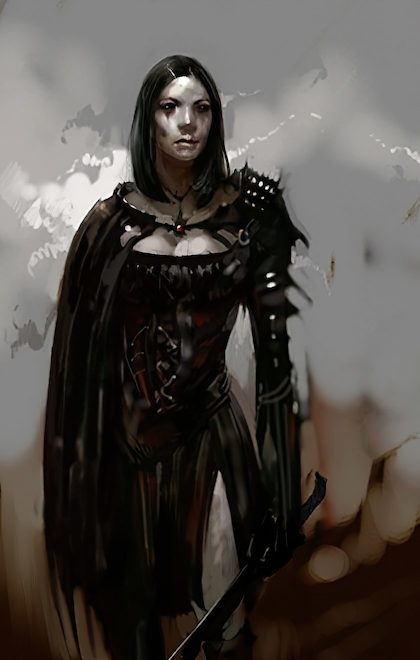
Character sheet portrait Cropped like the built-in ones. |
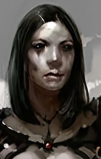
Side-bar portrait Cropped like the built-in ones. |
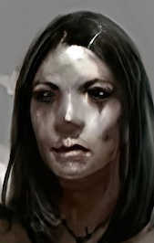
Side-bar portrait Cropped differently from the built-in ones:
It's up to you whether you want to use this instead of the standard If you want the built-in portraits to use this layout as well, install the "Zoomed-in side bar portraits" component of my IWD:EE Portrait Variations mod. |
Preview of the two side-bar versions for all included portraits:
M |
M_zoomed |
|---|---|
| 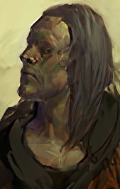 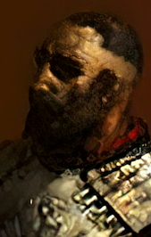 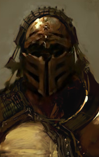 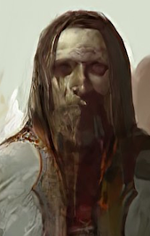 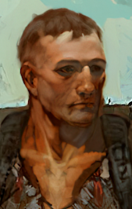 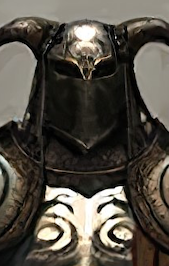 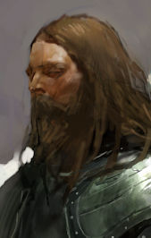 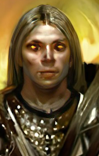 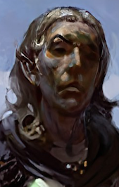 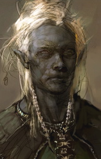 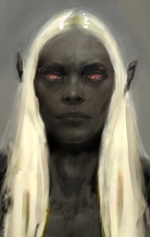 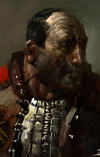 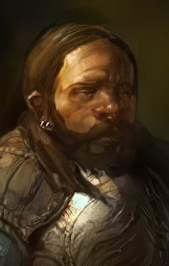 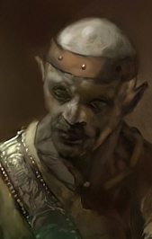 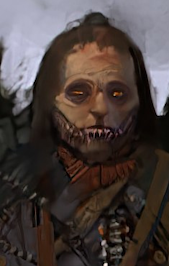 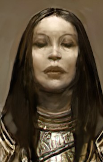 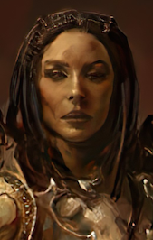 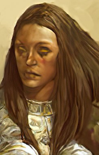 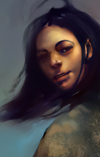 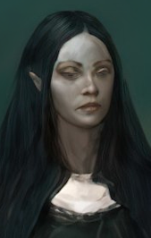 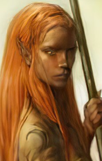 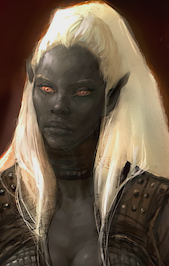 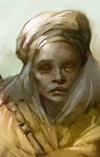 | 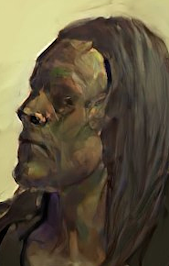 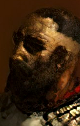 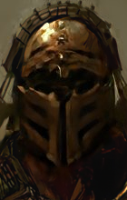 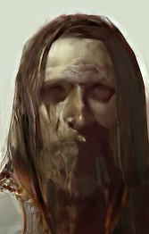 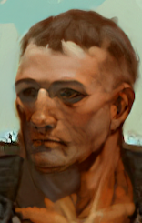 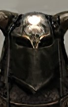 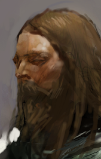 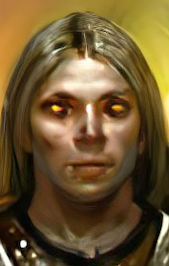 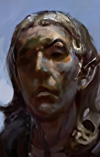 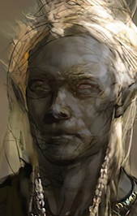 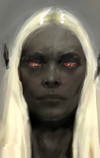 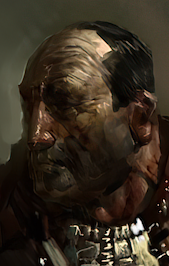 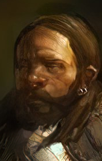 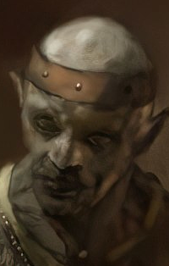 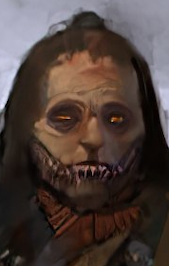 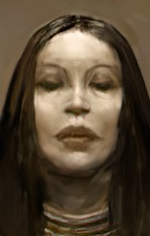 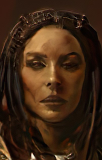 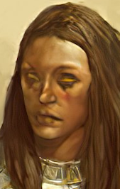 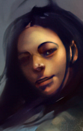 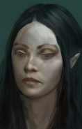 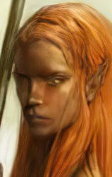 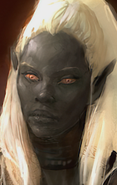 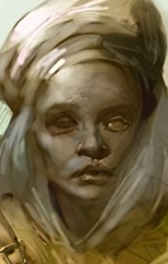 |
Note: All portraits in this document are shown at the size at which they are rendered in-game when playing at Full HD resolution [1920x1080] with UI scaling enabled.
For each included portrait, the character sheet version (layout L) is shown below:
{kind=link}